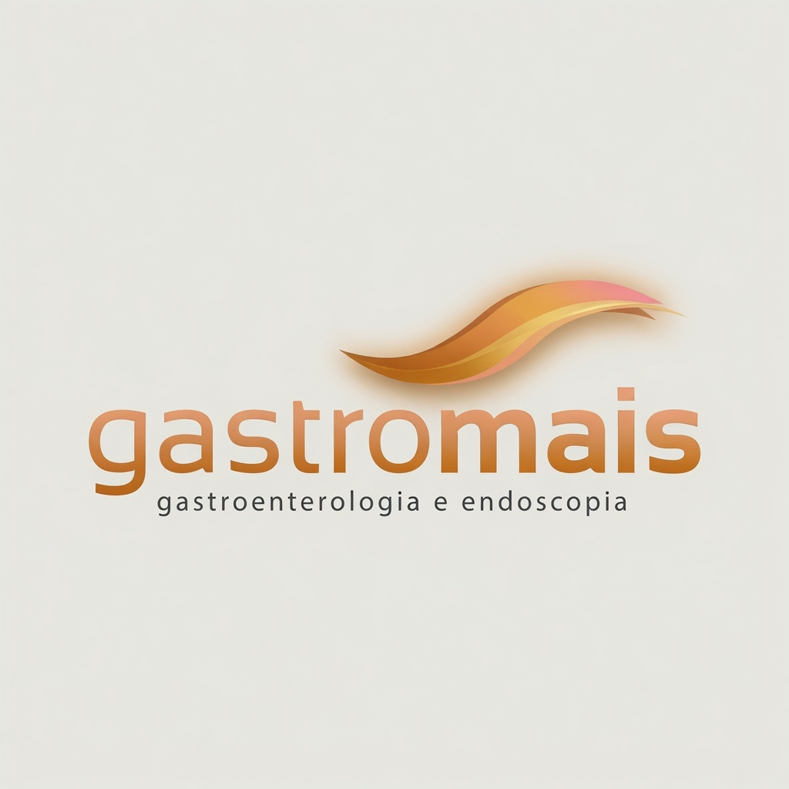
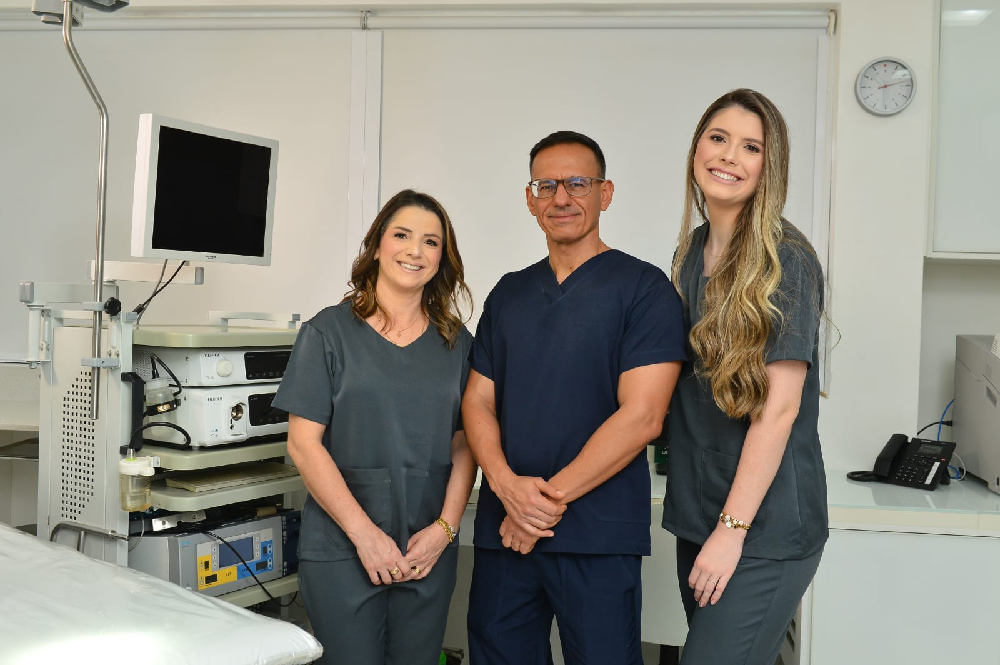
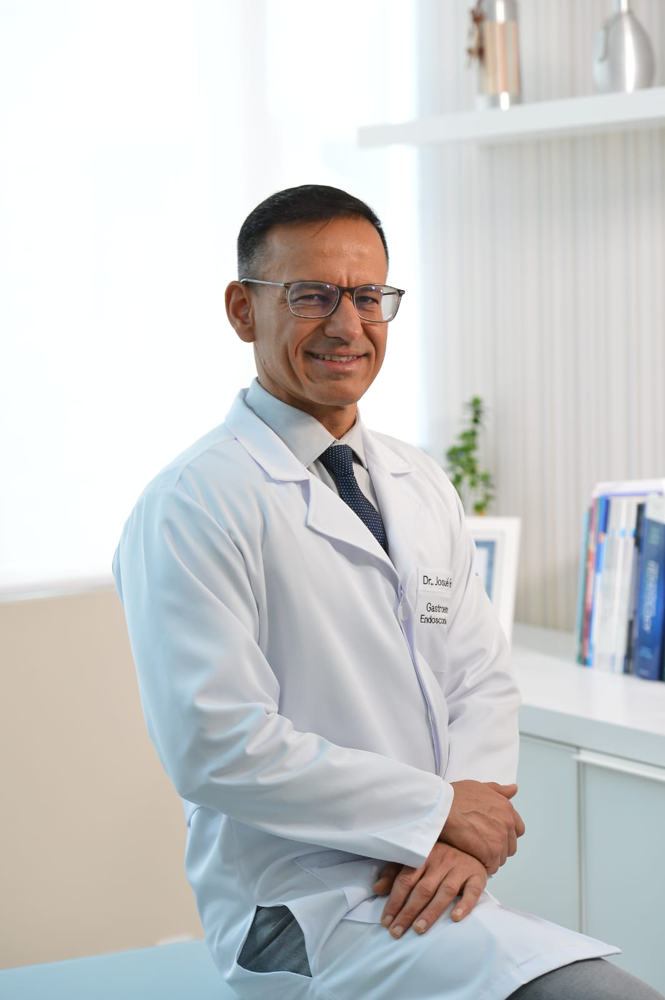

Sob a condução técnica do Dr. Josué Ferreira, a Gastromais une tradição clínica, atualização científica internacional e tecnologia diagnóstica em Criciúma.


Gastroenterologia e Endoscopia Digestiva
Graduação em Medicina e especialização com Residência Médica concluídas na Universidade Federal do Rio de Janeiro (UFRJ), construindo uma sólida base acadêmica e técnica nos principais centros de referência do país.
Início da atuação especializada na cidade, com foco no cuidado integral das doenças do aparelho digestivo, alinhando rigor científico e atendimento humanizado.
Desenvolvimento de uma importante parceria profissional junto ao Dr. Manoel Cardoso, integrando o corpo clínico de sua estrutura nos primeiros dez anos de consolidação regional.
Atuação de destaque no Hospital São José como médico intensivista (UTI), gastroenterologista e endoscopista, exercendo também a função de preceptor na formação de novos médicos residentes.
Responsável técnico pelo setor de Endoscopia do Hospital Unimed, liderando a estruturação e execução de procedimentos endoscópicos de alta complexidade tecnológica.
Em parceria com o Dr. João Cláudio Wasniewski, fundou a Proctomais / Gastromais, trazendo uma estrutura moderna focada em diagnóstico avançado, segurança clínica e excelência operacional.
Iniciamos de forma pioneira na região as avaliações ultrassonográficas voltadas ao acompanhamento da Doença de Crohn e Retocolite Ulcerativa. A formação de nossa equipe foi obtida diretamente em centros de referência global na Itália através do prestigiado grupo IBUS (International Bowel Ultrasound Group).
Exame totalmente seguro e repetível.
Conforto absoluto antes do procedimento.
Resultados práticos de menor custo estrutural.
Exame essencial para investigação de esôfago, estômago e duodeno, com diagnóstico por imagem de alta resolução.
Ultrassonografia avançada das alças intestinais, focada no acompanhamento não invasivo de Crohn e Retocolite.
Avaliação completa do intestino grosso, fundamental para a prevenção do câncer colorretal e exames diagnósticos.
Tecnologia avançada de filmagem por ingestão de cápsula, mapeando áreas complexas do intestino delgado.
Procedimentos cirúrgicos endoscópicos avançados: Polipectomias, Mucosectomias e Dissecção Submucosa (ESD).
Tratamentos endoscópicos de estenoses e terapias de coagulação por plasma de argônio para sangramentos e lesões vascularizadas.
Nossa recepção está pronta para alinhar seu atendimento de acordo com os critérios de segurança e horários disponíveis.
Rua Antônio de Luca 91, sala 805.
Centro — Criciúma/SC — CEP 88811-503
(48) 3411-6799